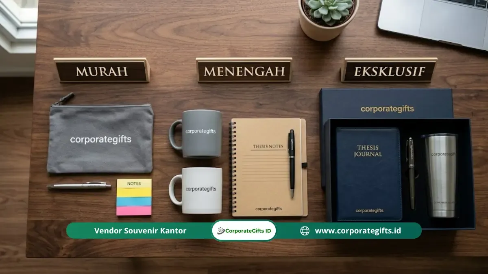

Corporate Gifts ID - Kado sidang skripsi terbaik adalah hadiah yang fungsional, personal, dan diberikan pada momen yang tepat, misalnya tumbler stainless custom, alat tulis premium, skincare set, atau hampers self-care dengan budget mulai Rp50.000 hingga Rp300.000 tergantung kedekatan hubungan dengan penerima. Kado ini diberikan menjelang, saat, atau setelah ujian akhir skripsi sebagai bentuk dukungan moral sekaligus apresiasi atas kerja keras akademis yang sudah dilalui.
Poin Kunci Kado Sidang Skripsi Berkesan:
- Sentuhan Personal & Fungsional: Kado yang paling diingat bertahun-tahun adalah benda yang bermanfaat untuk rutinitas harian dengan ukiran nama atau pesan personal.
- Kurasi 25 Pilihan Lengkap: Terbagi ke dalam 5 kelompok kebutuhan: fungsional, sentimental, relaksasi self-care, unik-kreatif, serta premium hampers.
- Fleksibilitas Budget: Rentang anggaran ideal berkisar dari Rp50.000 hingga Rp300.000+ disesuaikan dengan kedekatan relasi.
- Timing Pemberian: Sehari sebelum ujian untuk suntikan semangat, atau tepat setelah sidang selesai sebagai selebrasi kelulusan.
- Solusi Souvenir Massal: Tersedia paket custom merchandise B2B bagi himpunan, program studi, maupun apresiasi dewan dosen penguji.
Mengapa Memilih Kado Sidang Skripsi Lebih Sulit dari yang Dikira?
Memberikan kado sidang skripsi memiliki beban emosional tersendiri karena harus menyampaikan dua pesan sekaligus: dukungan moral sebelum menghadapi dewan penguji dan ungkapan bangga atas rampungnya riset akademis yang melelahkan.
Banyak orang terjebak di antara dua kutub pilihan: membeli kado murah yang terkesan seadanya atau memaksakan hadiah mahal yang ternyata kurang sesuai dengan kebutuhan harian penerima.
Padahal, kado yang paling berkesan bukanlah yang berharga fantastis, melainkan yang tepat sasaran, memiliki nilai guna nyata, dan diserahkan pada momentum psikologis yang pas.
Apa yang Membuat Sebuah Kado Sidang Skripsi Benar-benar Berkesan?
Berdasarkan pengalaman pengadaan cinderamata institusi, kado kelulusan mencapai resonansi emosional maksimal ketika mengintegrasikan tiga pilar utama:
- Fungsionalitas Tinggi: Benda yang benar-benar terpakai untuk menunjang aktivitas harian atau persiapan masuk dunia kerja profesional.
- Sentuhan Personalisasi: Detail khusus seperti grafir nama penerima, gelar baru, atau tanggal bersejarah yang mengubah benda generik menjadi memorabilia eksklusif.
- Timing yang Bijak: Diserahkan pada saat penerima tidak sedang terdistraksi ketegangan ujian teknis.
Tabel Panduan Kategori & Estimasi Budget Kado Sidang
Simak panduan matriks pemilihan hadiah sidang skripsi berdasarkan kelompok kebutuhan, rekomendasi produk, dan estimasi biayanya:
| Kategori Kado | Contoh Rekomendasi Item | Estimasi Budget | Target Penerima | Karakter Utama |
|---|---|---|---|---|
| Fungsional & Daily Use | Tumbler Grafir Nama, Notebook Hardcover, Power Bank | Rp65.000 - Rp200.000 | Sahabat, Teman Seangkatan | Sangat berguna untuk persiapan kerja / studi lanjut |
| Sentimental & Kenangan | Scrapbook Foto, Mug Custom Gelar, Bingkai Akrilik | Rp50.000 - Rp150.000 | Sahabat Karib, Partner Tim | Membangkitkan nostalgia perjuangan kuliah bersama |
| Perawatan Diri (Self-Care) | Diffuser Aromaterapi, Skincare Set, Paket Kopi Artisan | Rp85.000 - Rp250.000 | Pasangan, Teman Dekat | Membantu relaksasi tubuh setelah stres riset berbulan-bulan |
| Unik & Kreatif | Tanaman Kaktus Mini, Custom Puzzle Foto, Lilin Kedelai | Rp45.000 - Rp120.000 | Teman Sekelas, Rekan Organisasi | Estetik, anti-mainstream, dan menjadi dekorasi meja |
| Eksklusif & Hampers | Gift Box Multi-item, Jam Tangan Casual, Smart Gadget | Rp200.000 - Rp500.000+ | Pasangan, Keluarga Inti, Dosen | Mewah, elegan, dan dikemas dalam hardbox pita premium |
25 Rekomendasi Kado Sidang Skripsi Terbaik
Berikut adalah kurasi 25 inspirasi hadiah yang telah kami kelompokkan ke dalam lima kategori tematik:
1. Kado Fungsional yang Langsung Bisa Dipakai
Kado fungsional menjadi pilihan teraman karena memberikan manfaat praktis tanpa risiko salah selera:
1. Tumbler Stainless dengan Grafir Nama
Tumbler stainless SUS 304 berkapasitas 500 ml dengan teknologi insulasi vakum ganda menahan suhu 8-12 jam. Kustomisasi grafir laser nama lengkap dan gelar baru menjadikannya memorabilia berkelas, atau Anda juga dapat memilih opsi berteknologi tinggi seperti smart tumbler dengan sensor suhu LED.
2. Set Alat Tulis Eksekutif (Executive Pen)
Pulpen rollerball logam premium dengan tinta gel halus sangat pas untuk menyambut fase wawancara kerja profesional maupun tanda tangan berkas yudisium. Simak panduan lengkapnya di ulasan souvenir pulpen alat tulis premium.
3. Notebook Hardcover Jurnal
Buku catatan sampul kulit sintetis dengan pita pembatas dan kantong selip belakang. Kombinasi pulpen dan buku catatan eksklusif selalu menjadi media refleksi karier yang bernilai tinggi. Sisipkan kalimat motivasi tulisan tangan di halaman perdana untuk nilai emosional ekstra.
4. Pouch Organizer Kabel & Aksesoris Gadget
Tas kecil berbahan kanvas tebal tahan air untuk merapikan charger, kabel data, flashdisk, dan adaptor agar tas kerja tetap rapi. Pilihan ini dapat dieksplorasi di kategori merchandise perusahaan praktis.
5. Power Bank Berkapasitas Besar Fast Charging
Pengisi daya portabel 10.000 mAh ke atas yang ringkas memastikan mobilitas penerima tidak terhambat baterai habis saat beraktivitas di luar ruangan.
6. Lampu Belajar LED Portable USB
Lampu meja minimalis dengan pengaturan kecerahan fleksibel, sangat berguna untuk membaca jurnal maupun bekerja di kamar kos.
7. Earbuds Wireless Bluetooth
Headphone nirkabel dengan fitur peredam bising untuk menemani mendengarkan podcast karier, musik relaksasi, atau meeting virtual, sejalan dengan tren souvenir gadget digital modern.

Gift set kado sidang skripsi multi-item: kombinasi tumbler grafir, agenda eksklusif, dan kemasan hardbox premium.
2. Kado Personal dan Sentimental
Hadiah berkarakter personal mencerminkan ketulusan waktu dan pemikiran mendalam yang Anda luangkan:
8. Scrapbook atau Album Foto Kenangan
Kompilasi foto perjalanan kuliah sejak semester awal yang dihiasi stiker dan catatan lucu kenangan bersama teman seperjuangan.
9. Mug Custom Keramik dengan Nama & Tanggal Sidang
Cangkir keramik berkualitas dengan cetakan ilustrasi toga atau kutipan pembangkit semangat untuk rutinitas minum kopi di pagi hari, serupa dengan pesona paket souvenir tea set & cangkir keramik.
10. Bingkai Foto Akrilik Minimalis
Pigura bening modern memuat foto terbaik bersama saat momen perayaan setelah selesai presentasi skripsi.
11. Kartu Ucapan Tulis Tangan Penuh Makna
Secarik kartu bertekstur dengan pesan tulus yang menceritakan betapa bangganya Anda atas keteguhan mereka melewati fase revisi skripsi.
12. Kaos atau Tote Bag Custom Desain Jurusan
Merchandise apparel berbahan katun combed premium bertema tipografi bidang keilmuan mereka sebagai kebanggaan almamater, yang diproduksi lewat standar custom apparel berkualitas.
13. Parfum atau Body Mist Aroma Segar
Wewangian dengan aroma favorit penerima yang memberikan rasa percaya diri tinggi saat melangkah ke babak karier berikutnya.
3. Kado Perawatan Diri (Self-Care)
Setelah berbulan-bulan mengorbankan waktu tidur, hadiah relaksasi adalah wujud kepedulian yang sangat menyejukkan:
14. Paket Skincare atau Sheet Mask Set
Rangkaian masker wajah dan pelembap untuk merevitalisasi kulit yang letih akibat paparan layar laptop dalam durasi lama.
15. Ultrasonic Diffuser & Essential Oil
Alat pengharum ruangan uap ultrasonik dengan aroma lavender atau eucalyptus untuk menciptakan suasana tidur yang lebih nyenyak.
16. Voucher Spa atau Relaksasi Tubuh
Tiket perawatan pijat relaksasi atau creambath salon yang memberi ruang bagi mereka untuk melepas seluruh penat fisik.
17. Hampers Kopi Single Origin atau Teh Herbal
Pilihan biji kopi arabika pilihan lengkap dengan dripper praktis bagi para penikmat seduhan kopi otentik dalam koleksi hampers & gift box eksklusif.
4. Kado Unik dan Kreatif
Bagi Anda yang menyukai hadiah berkesan visual menarik dan beda dari yang lain:
18. Tanaman Sukulen atau Kaktus Mini
Tanaman meja hias dalam pot tembikar estetik sebagai simbol pertumbuhan baru dan harapan masa depan yang mekar.
19. Buku Pengembangan Diri / Karier Pilihan
Buku non-fiksi inspiratif seputar finansial pemula atau navigasi dunia kerja untuk bekal pasca-kampus.
20. Custom Jigsaw Puzzle Foto
Permainan puzzle interaktif bergambar momen kebersamaan yang menyenangkan saat dirangkai bersama.
21. Snack Box Camilan Favorit
Kotak kemasan cantik berisi aneka camilan gurih dan cokelat manis untuk selebrasi santai bersama sahabat.
22. Lilin Aromaterapi Soy Wax Handmade
Lilin wangi alami berbahan kedelai ramah lingkungan dengan aroma vanilla atau chamomile yang menenangkan.
5. Kado untuk Budget Lebih Longgar
Pilihan hadiah istimewa untuk pasangan, sahabat terdekat, maupun anggota keluarga inti:
23. Jam Tangan Casual Merek Lokal Berkualitas
Aksesoris penunjuk waktu berdesain clean yang cocok dipadukan dengan busana kasual maupun setelan kerja formal.
24. Voucher Belanja E-Wallet
Solusi paling fleksibel yang memberikan keleluasaan penuh bagi penerima untuk membeli perlengkapan yang paling mereka butuhkan.
25. Hampers Eksklusif Multi-Item Curated Gift Box
Perpaduan serasi antara tumbler grafir nama, notebook kulit, pulpen metal, dan lilin aromaterapi yang dirangkai dalam hardbox bermagnet dengan pita satin mewah, sebagaimana diuraikan dalam panduan gift set wisuda dan sidang skripsi.
Berapa Budget Ideal untuk Kado Sidang Skripsi?
Alokasi anggaran kado sidang skripsi sebaiknya disesuaikan dengan tingkat kedekatan relasi:
- Teman Sekelas / Rekan Organisasi: Rp50.000 - Rp100.000 (cukup sopan, manis, dan tidak membebani).
- Sahabat Karib: Rp100.000 - Rp250.000 (memberikan variasi personalisasi grafir atau paket self-care lengkap).
- Pasangan atau Keluarga Inti: Rp200.000 - Rp500.000+ (hadiah fungsional jangka panjang seperti smartwatch atau curated gift set).
Kapan Waktu Paling Tepat Memberikan Kado Sidang Skripsi?
Waktu penyerahan kado sangat menentukan atmosfer emosional yang tercipta:
- H-1 Sebelum Sidang: Kirimkan kado penyemangat ringan beserta kartu doa untuk meredakan ketegangan mental.
- Tepat Pasca-Sidang: Berikan hadiah selebrasi saat pengumuman kelulusan telah dibacakan oleh dewan dosen penguji.
- Hindari Pagi Hari Menjelang Ujian: Jangan mendistraksi penerima dengan serah terima kado di saat mereka sedang fokus menghafal materi presentasi.
Butuh Souvenir atau Kado dalam Jumlah Banyak?
Apabila Anda bertindak sebagai panitia yudisium kampus, pengurus himpunan mahasiswa, atau koordinator program studi yang membutuhkan cinderamata kelulusan dalam jumlah besar, CorporateGifts.ID menyediakan layanan kustomisasi massal melalui lini souvenir custom resmi maupun paket seminar kit dan goodie bag kampus dengan standar mutu terjamin.
Mulai dari souvenir wisuda kekinian, plakat akrilik, paket gift set dosen penguji, hingga tips pemesanan jumlah besar seperti dibahas di tips negosiasi harga souvenir wisuda, seluruhnya dapat disesuaikan dengan anggaran institusi Anda.
Pertanyaan Umum Seputar Kado Sidang Skripsi (FAQ)
Kesimpulan
Kado sidang skripsi yang paling berkesan bukan diukur dari mahalnya harga, melainkan dari ketepatan fungsi bagi penerima, ketulusan sentuhan personal, serta momentum waktu penyerahan yang tepat.
Jelajahi berbagai pilihan souvenir wisuda dan kado kelulusan melalui katalog produk resmi kami atau ajukan pengadaan massal kampus via formulir permintaan penawaran harga bersama CorporateGifts.ID.